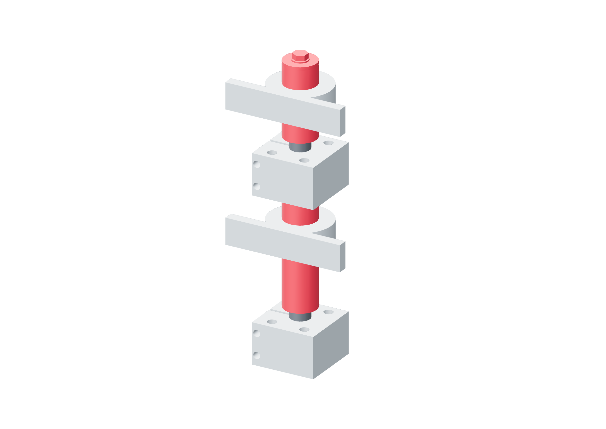

Preparation / shaft capture34 / 179
Finish fourteen metal capture tubes
Tubes connect metal hubs and plates to bearing inner races and end washers. Their actual finished lengths establish captured axial movement without loading seals or outer races.
Add14 tubes from 20 OD / 12 ID aluminum stock · 12.5 mm finished bore
Tools / setupMetal saw · 12.5 mm drill · caliper · file / deburrer · actual bearings

| Shaft / local stack | Nominal tube lengths / mm |
|---|---|
| yaw | 35.15 · 16 · 14.65 · 11.5 |
| pitch-negative | 9.5 · 15.15 · 25.15 |
| pitch-positive | 25.15 · 11.5 |
| roll | 21.5 · 12 · 27.15 · 1.15 · 5.5 |
- Bore stock to 12.5 mm before cutting. Cut and label the source lengths; deburr both ends without rounding a load face.
- Fit each tube against its actual metal face. Relieve/chamfer its 20 mm OD to touch only the delivered bearing inner race.
- Finish the metal stack for ≤0.5 mm one-sided freedom and ≤1 mm total captured excursion. Do not force a bearing housing into alignment by tightening an end bolt.
Ready when
Every tube has metal face contact, clears the seal/outer race/housing and permits free rotation with its captured movement bounded. A rubbing tube, outer-race load or unknown end clearance fails the stack. Finish the actual spacer contact before restoring an end keeper.